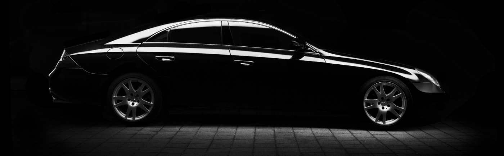

Що таке МІНІ КАСКО?
Міні КАСКО – це оптимальний вибір для тих, хто хоче захистити свій автомобіль від збитків, завданих внаслідок ДТП, але не готовий платити за повний пакет КАСКО. Цей вид страхування має ряд переваг, які роблять його особливо привабливим для українських водіїв.
auto ins, автоинс, аутоинс, ауто инс, autoins, автоинс, авто инс, автоінс, авто інс, ауто інс,
Що покриває Міні КАСКО?
Головна перевага Міні КАСКО – це захист від збитків, завданих вашому автомобілю внаслідок ДТП, незалежно від того, хто є винуватцем. Це означає, що ви можете отримати відшкодування навіть у тому випадку, якщо ви самі стали причиною аварії.
Залежно від умов договору, Міні КАСКО може покривати:
-
ДТП з вини
-
ДТП з вини та без вини
-
В деяких випадках навіть викрадення.
-
Відшкодування від 50000 до 1000000 грн. в залежності від обраної Вами програми.
Залиште заявку і наші спеціалісти дадуть відповідь на всі Ваші запитання.

Переваги Міні КАСКО
-
Доступна ціна: Міні КАСКО коштує значно дешевше, ніж повний поліс КАСКО, що робить його доступним для широкого кола водіїв.
-
Захист від основних ризиків: Міні КАСКО покриває найбільш поширений ризик – ДТП, що дозволяє захистити автомобіль від значних фінансових втрат.
-
Простота оформлення: оформлення поліса МініКАСКО займає мінімум часу та не потребує фотоогляду авто на відміну від повного КАСКО.
-
Можливість вибору: ви можете обрати оптимальний варіант покриття та страхову суму, виходячи з ваших потреб та можливостей.
Кому підійде Міні КАСКО?
МініКАСКО – це ідеальний вибір для:
-
Водіїв з невеликим досвідом водіння;
-
Водіїв, які хочуть захистити свій автомобіль від ДТП, але не готові платити за повне КАСКО;
-
Власників автомобілів, які часто експлуатуються в міських умовах;
-
Водіїів, вік авто яких перевищує 15 років.
Міні КАСКО – це надійний захист вашого автомобіля від непередбачуваних ситуацій на дорозі. Обирайте поліс відповідально, враховуючи свої потреби та можливості. Пам'ятайте, що від вашого вибору залежить ваша фінансова безпека та спокій за кермом.